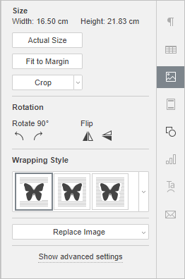
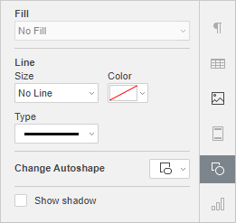
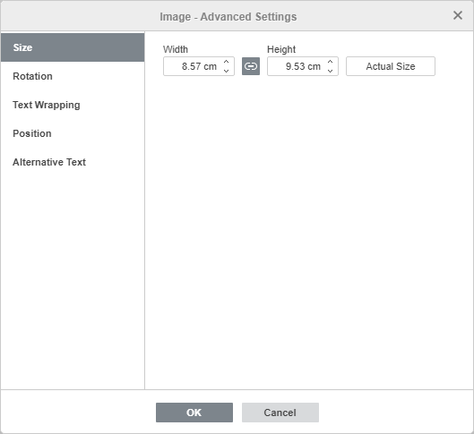
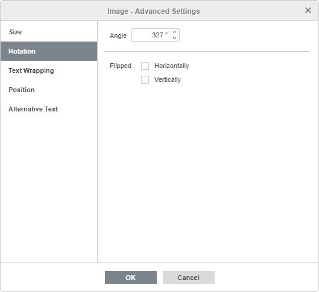
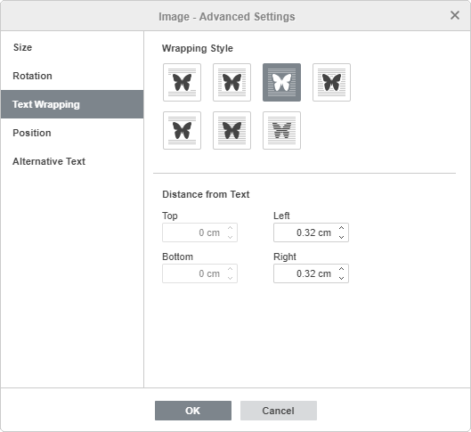
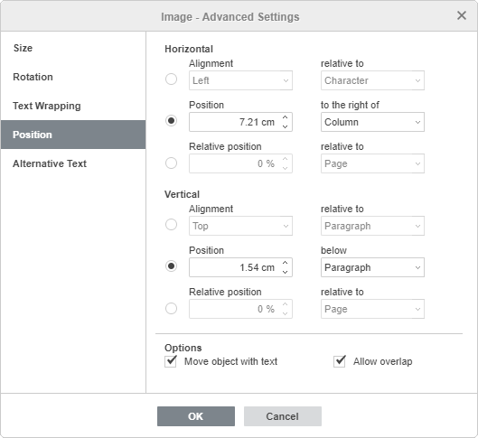
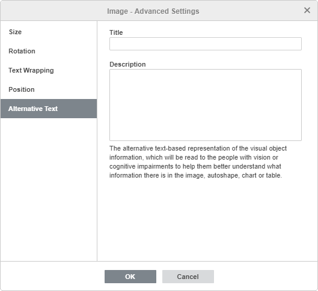

Insert images
In the Document Editor, you can insert images in the most popular formats into your document. The following image formats are supported: BMP, GIF, JPEG, JPG, PNG.
Insert an image
To insert an image into the document text,
- Place the cursor where you want the image to be put.
- Switch to the Insert tab of the top toolbar.
- Click the Image icon on the top toolbar.
-
Select one of the following options to upload the image:
-
the Image from File option will open a standard dialog window for you to select a file. Browse your computer's hard disk drive for the necessary file and click the Open button.
In the online editor, you can select several images at once.
- the Image from URL option will open the window where you can enter the web address of the required image and click the OK button.
- the Image from Storage option will open the Select data source window. Select an image stored on your portal and click the OK button.
-
the Image from File option will open a standard dialog window for you to select a file. Browse your computer's hard disk drive for the necessary file and click the Open button.
- Once the image is added, you can change its size, properties, and position.
It's also possible to add a caption to the image. To learn more about working with captions for images, you can refer to this article.
To make an image into a link:
- select the image and use the Ctrl+K key combination, or
- select the image, switch to the Insert or References tab, and click the Link button, or
- select the image, click it with the right mouse button, and choose the Link menu option.
To learn more about working with links, please refer to the following article.
Move and resize images
To change the image size, drag small squares situated on its edges. To maintain the original proportions of the selected image while resizing, hold down the Shift key and drag one of the corner icons.
To alter the image position, use the icon that appears after hovering your mouse cursor over the image. Drag the image to the necessary position without releasing the mouse button.
When you move the image, the guide lines are displayed to help you precisely position the object on the page (if the selected wrapping style is different from the inline).
To rotate the image, hover the mouse cursor over the rotation handle and drag it clockwise or counterclockwise. To constrain the rotation angle to 15 degree increments, hold down the Shift key while rotating.
The list of keyboard shortcuts that can be used when working with objects is available here.
Adjust image settings

Some of the image settings can be altered using the Image settings tab of the right sidebar. To activate it, click the image and choose the Image settings icon on the right. Here you can change the following properties:
-
Size is used to view the Width and Height of the current image. If necessary, you can restore the actual image size by clicking the Actual Size button. The Fit to Margin button allows you to resize the image so that it occupies all the space between the left and right page margins.
The Crop button is used to crop the image. Click the Crop button to activate cropping handles which appear on the image corners and in the center of each its side. Manually drag the handles to set the cropping area. You can move the mouse cursor over the cropping area border so that it turns into the icon and drag the area.
- To crop a single side, drag the handle located in the center of this side.
- To simultaneously crop two adjacent sides, drag one of the corner handles.
- To equally crop the two opposite sides of the image, hold down the Ctrl key when dragging the handle in the center of one of these sides.
- To equally crop all sides of the image, hold down the Ctrl key when dragging any of the corner handles.
When the cropping area is specified, click the Crop button once again, or press the Esc key, or click anywhere outside of the cropping area to apply the changes.
After the cropping area is selected, it's also possible to use the Crop to shape, Fill and Fit options available from the Crop drop-down menu. Click the Crop button once again and select the option you need:
- If you select the Crop to shape option, the picture will fill a certain shape. You can select a shape from the gallery, which opens when you hover your mouse pointer over the Crop to Shape option. You can still use the Fill and Fit options to choose the way your picture matches the shape.
- If you select the Fill option, the central part of the original image will be preserved and used to fill the selected cropping area, while the other parts of the image will be removed.
- If you select the Fit option, the image will be resized so that it fits the height and the width of the cropping area. No parts of the original image will be removed, but empty spaces may appear within the selected cropping area.
To return the image to its default pixel dimensions, click the Reset crop button.
- Opacity — use this section to set an Opacity level dragging the slider or entering the percent value manually. The default value is 100%. It corresponds to the full opacity. The 0% value corresponds to the full transparency.
-
Rotation is used to rotate the image by 90 degrees clockwise or counterclockwise as well as to flip the image horizontally or vertically. Click one of the buttons:
- to rotate the image by 90 degrees counterclockwise.
- to rotate the image by 90 degrees clockwise.
- to flip the image horizontally (left to right).
- to flip the image vertically (upside down).
- Wrapping Style is used to select a text wrapping style from the available ones, i.e., inline, square, tight, through, top and bottom, in front, behind (for more information, see the advanced settings description below).
- Replace Image is used to replace the current image by loading another one From File, From Storage, or From URL.
You can also find some of these options in the right-click menu. The menu options are:
- Cut, Copy, Paste — standard options that are used to cut or copy the selected text/object and paste the previously cut/copied text passage or object to the current cursor position.
- Arrange is used to bring the selected image to the foreground, send it to the background, move forward or backward, as well as group or ungroup images to perform operations with several of them at once. To learn more on how to arrange objects, please refer to this page.
- Align is used to align the image to the left, in the center, to the right, at the top, in the middle or at the bottom. To learn more on how to align objects, please refer to this page.
- Wrapping Style is used to select a text wrapping style from the available ones, i.e., inline, square, tight, through, top and bottom, in front, behind, or edit the wrap boundary. The Edit Wrap Boundary option is available only if the selected wrapping style is not inline. Drag wrap points to customize the boundary. To create a new wrap point, click anywhere on the red line and drag it to the necessary position.
- Rotate is used to rotate the image by 90 degrees clockwise or counterclockwise as well as to flip the image horizontally or vertically.
- Save as picture is used to save the image as a picture on your hard drive.
- Crop is used to apply one of the cropping options: Crop, Fill, or Fit. Select the Crop option from the submenu, then drag the cropping handles to set the cropping area, and click one of these three options from the submenu once again to apply the changes.
- Actual Size is used to change the current image size to the actual one.
- Replace image is used to replace the current image by loading another one From File or From URL.
- Image Advanced Settings is used to open the 'Image — Advanced Settings' window.

When the image is selected, the Shape settings icon is also available on the right. You can click this icon to open the Shape settings tab on the right sidebar and adjust the shape line type, size, color, and opacity, as well as change the shape type by selecting another shape from the Change Autoshape menu. The shape of the image will change correspondingly.
On the Shape Settings tab, you can also use the Show shadow option to add a shadow to the image.
Adjust image advanced settings
To change the image advanced settings, click the image with the right mouse button and select the Image Advanced Settings option from the right-click menu or just click the Show advanced settings link on the right sidebar. The image properties window will open:

The Size tab contains the following parameters:
- Width and Height — use these options to change the width and/or height. If the Constant proportions button is clicked (in this case it looks like this ), the width and height will be changed together preserving the original image aspect ratio. To restore the actual size of the added image, click the Actual Size button.

The Rotation tab contains the following parameters:
- Angle — use this option to rotate the image by an exactly specified angle. Enter the necessary value measured in degrees into the field or adjust it using the arrows on the right.
- Flipped — check the Horizontally box to flip the image horizontally (left to right) or check the Vertically box to flip the image vertically (upside down).

The Text Wrapping tab contains the following parameters:
-
Wrapping Style — use this option to change the way the image is positioned relative to the text: it will either be a part of the text (in case you select the inline style) or bypassed by it from all sides (if you select one of the other styles).
-
Inline — the image is considered to be a part of the text, like a character, so when the text moves, the image moves as well. In this case the positioning options are inaccessible.
If one of the following styles is selected, the image can be moved independently of the text and positioned on the page exactly:
- Square — the text wraps the rectangular box that bounds the image.
- Tight — the text wraps the actual image edges.
- Through — the text wraps around the image edges and fills in the open white space within the image. So that the effect can appear, use the Edit Wrap Boundary option from the right-click menu.
- Top and bottom — the text is only above and below the image.
- In front — the image overlaps the text.
- Behind — the text overlaps the image.
-
Inline — the image is considered to be a part of the text, like a character, so when the text moves, the image moves as well. In this case the positioning options are inaccessible.
If you select the square, tight, through, or top and bottom style, you will be able to set up some additional parameters, i.e., distance from text at all sides (top, bottom, left, right).

The Position tab is available only if you select a wrapping style other than inline. This tab contains the following parameters that vary depending on the selected wrapping style:
-
The Horizontal section allows you to select one of the following three image positioning types:
- Alignment (left, center, right) relative to character, column, left margin, margin, page or right margin.
- Absolute Position measured in absolute units, i.e., Centimeters/Points/Inches (depending on the option specified on the File → Advanced Settings... tab) to the right of character, column, left margin, margin, page or right margin.
- Relative position measured in percent relative to the left margin, margin, page or right margin.
-
The Vertical section allows you to select one of the following three image positioning types:
- Alignment (top, center, bottom) relative to line, margin, bottom margin, paragraph, page or top margin.
- Absolute Position measured in absolute units i.e. Centimeters/Points/Inches (depending on the option specified on the File → Advanced Settings... tab) below line, margin, bottom margin, paragraph, page or top margin.
- Relative position measured in percent relative to the margin, bottom margin, page or top margin.
- Move object with text ensures that the image moves along with the text to which it is anchored.
- Allow overlap makes is possible for two images to overlap if you drag them near each other on the page.

The Alternative Text tab allows specifying a Title and Description that will be read to people with vision or cognitive impairments.